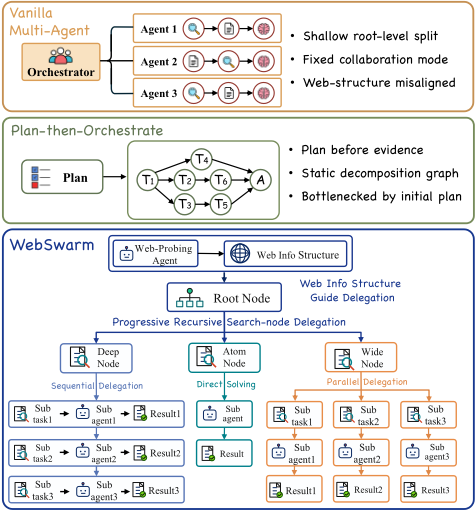
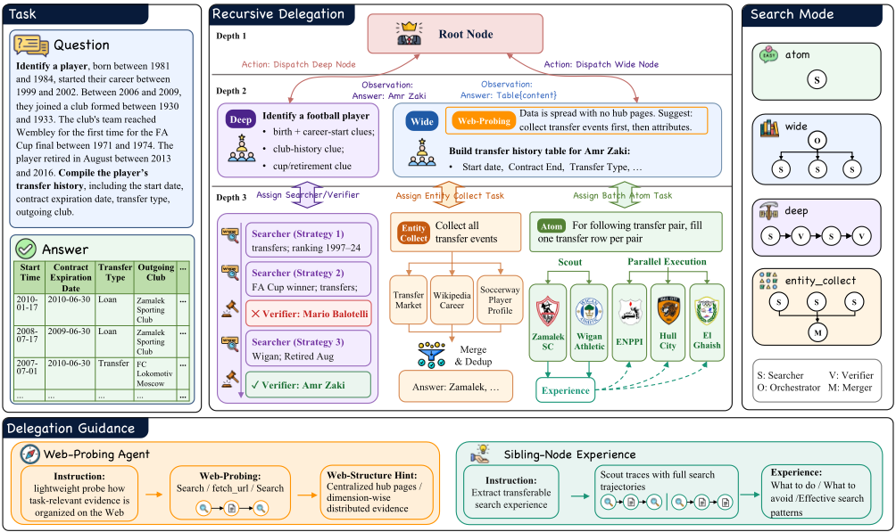
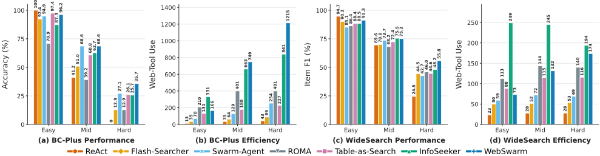
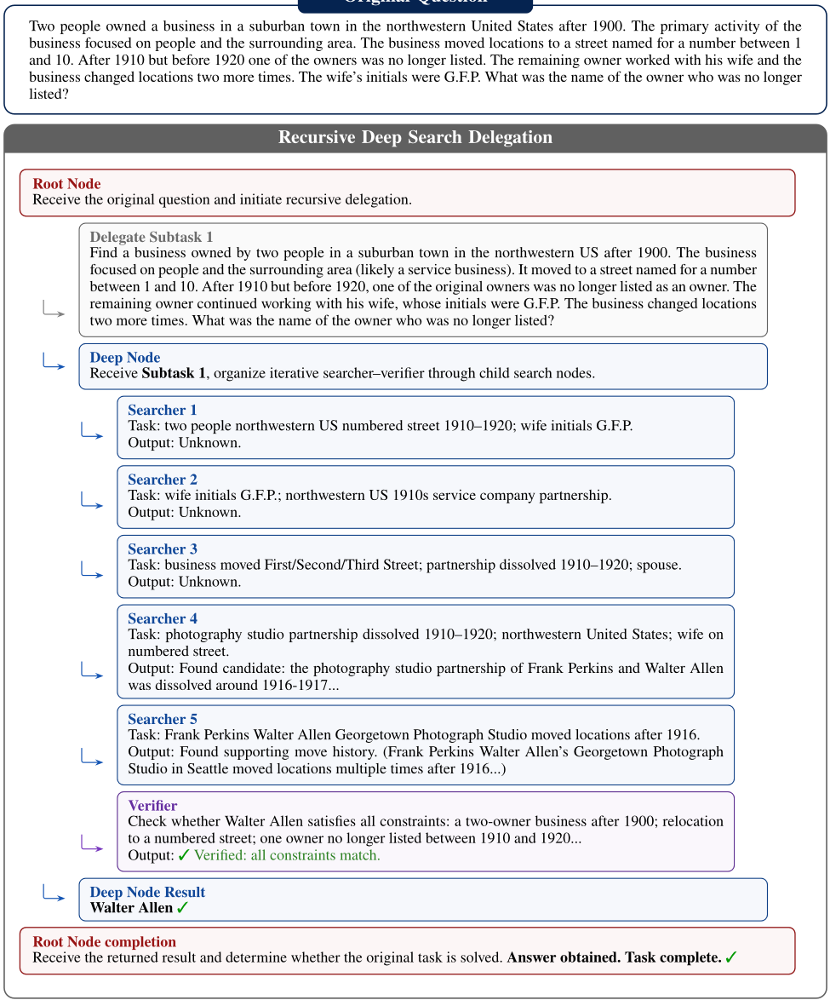
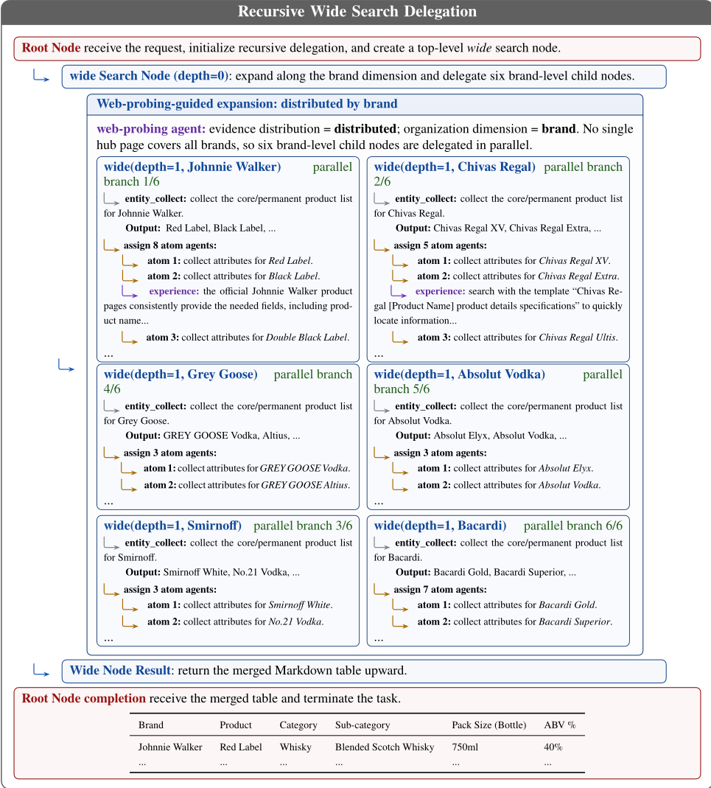
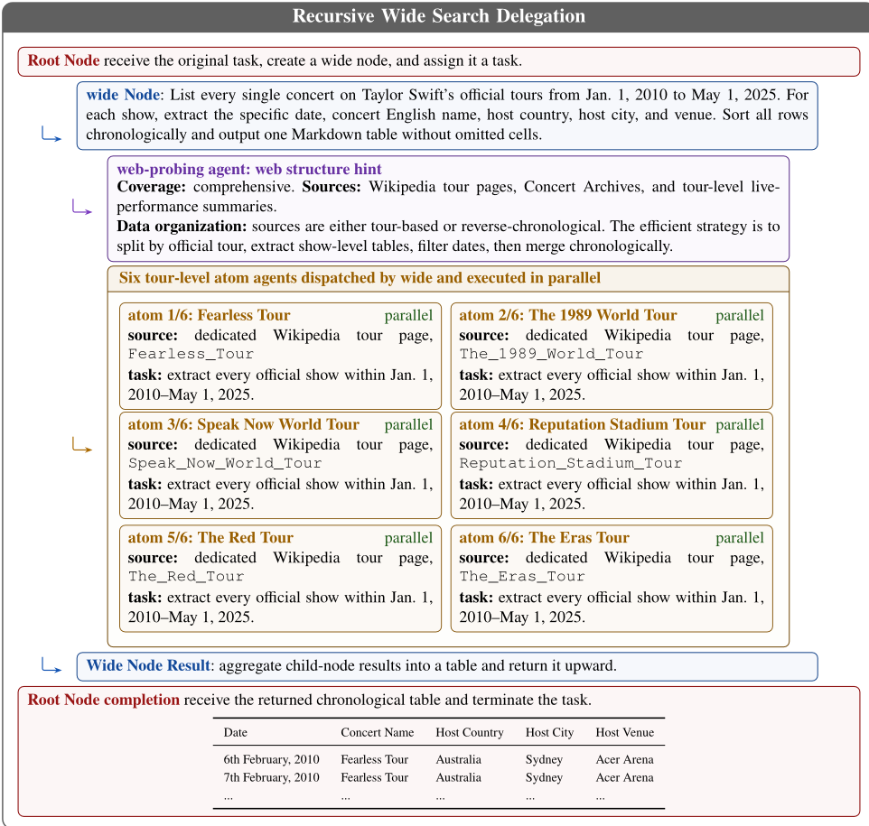
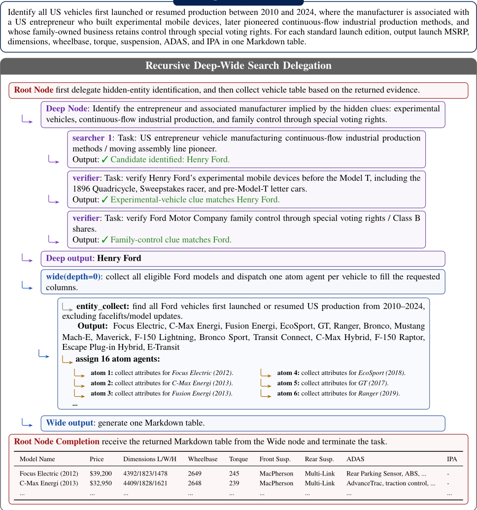

WebSwarm：面向深度与广度网页搜索的递归式多智能体编排
论文解决复杂网页信息获取中'深度'（多跳依赖与约束）与'广度'（对大量候选实体的覆盖）难以兼顾的问题：单 ReAct Agent 受限于单一长轨迹与有限上下文，现有多 Agent 系统在递归深度、协作自适应性与证据驱动的任务展开上仍有不足。方法上提出 WebSwarm，一个推理时的渐进式递归委派框架：每个搜索节点携带'局部目标+搜索模式'（atom/deep/wide/entity_collect 四种），可自行调用 web 工具求解或继续委派子节点，子结果向上返回、作为父节点再扩展/修订/聚合的控制信号；同时引入 Web-Probing Agent 预探测网页信息拓扑以对齐展开维度，并在同类兄弟节点间复用 scout 节点蒸馏的过程级经验。在 BrowseComp-Plus、WideSearch、DeepWideSearch、GISA 四个基准上，以 GLM-4.5 为骨干的 WebSwarm 一致超过单 Agent 与多 Agent 基线，且任务越难优势越大。其递归委派、目标-模式耦合与实例内经验复用对团队的多 Agent 编排设计有直接借鉴价值。
复杂网页信息获取任务需要同时支持深度搜索（解析多跳依赖与约束）与广度搜索（对候选实体、网页与信息源保持充分覆盖）。单 ReAct Agent 受限于单一长轨迹与有限上下文，难以兼顾两者；现有多 Agent 搜索系统存在三个局限：(1) 递归深度浅，通常只在根节点分解一次，更深层结构被迫压缩进子 Agent 的长 ReAct 轨迹；(2) 协作自适应性有限，依赖单一全局协作范式（多样本聚合、串行交接或并行分治），无法按子任务瓶颈灵活切换协作形态；(3) 任务展开缺乏证据支撑，仅按查询表面语义切分，与网页信息的实际组织结构不对齐，导致冗余检索、召回不足或聚合困难。
WebSwarm 将搜索建模为推理时的渐进式递归委派：执行中动态构建委派树，每个节点是一个 Agent，接收局部目标与搜索模式；模式决定节点是自行调用 web 工具（search/fetch_url）迭代搜索，还是继续生成子节点并组织局部协作。四种搜索模式：atom（单实体属性查找/短多跳）、deep（串行 searcher-verifier 结构，迭代提出候选并由独立验证者对抗式核查）、wide（对一组条目的扇出收集/表格填充）、entity_collect（高精度高召回的实体集合枚举，内部并行搜索路径设为 3）。子节点返回的结果既是答案组件也是父节点继续扩展、修订或聚合的控制信号，形成自上而下委派与自下而上证据反馈的交替。另引入两个引导信号：(1) Web-Probing Agent 在展开前轻量探测网页信息拓扑（centralized / centralized_with_gaps / distributed），信息集中时围绕聚合页少量抽取、分散时沿组织维度展开；(2) 实例内经验复用：先运行 2 个 scout 子节点，从其轨迹蒸馏查询模式、可靠来源、无效路径等过程级经验，注入其余同类兄弟节点的求解上下文。骨干为 GLM-4.5，附录给出根 Agent、探测 Agent 与经验抽取的完整系统提示及推理伪代码。
BrowseComp-Plus（随机抽样 200 实例）：比 ReAct 高 17.50 个准确率点，比最强多 Agent 基线高 3.50 点
WideSearch-EN：Row F1 与 Item F1 分别比 ReAct 高 10.91 与 9.76 点
DeepWideSearch-EN：Row F1 与 Item F1 分别比 ReAct 高 9.56 与 11.77 点；GISA 上在所有任务子集表现强劲
困难样本增益最大：BrowseComp-Plus Hard 子集从 ReAct 的 0.0 提升到 35.7，WideSearch-EN Hard 子集从 24.5 提升到 55.8
消融：去掉 Web-Probing 后 Item F1 变化不大，但平均 Web 工具调用次数从 137.03 增至 239.90（WideSearch）、从 203.73 增至 331.39（DeepWideSearch）；去掉经验复用则在两个数据集上 Item F1 一致下降
跨骨干泛化：在 Qwen3-32B 与 Qwen3.5-35B 上均一致优于 ReAct，说明增益不依赖特定骨干的能力水平
相对已有工作的区别：(1) 与只在根节点一次性分解或采用固定全局协作拓扑的系统（ROMA 的递归子任务树、InfoSeeker 的 Host-Manager-Worker、A-MapReduce 的水平分解、Table-as-Search 的表格补全）不同，WebSwarm 把编排视为递归委派，任务分解与协作结构随证据积累在推理时共同演化；(2) 委派时生成的是'目标-模式对'而非单纯子任务列表，使每个下游节点自带求解协议与协作结构，可在同一递归过程中组合多种协作形态；(3) 用 Web-Probing 把分解维度与网页信息的实际组织结构对齐，而非仅按查询表面语义切分；(4) 经验复用严格限定在同一实例内的同类兄弟节点，区别于跨任务经验/技能迁移，同时保持评测样本独立性。
相关度级别：high
命中能力域：3.3 Agent 架构与工具使用 | 3.4 多智能体协作 | 3.1 上下文工程与记忆 | 3.5 评测与可靠使用
理由：直接命中 3.3 与 3.4 的核心技术：递归委派的 Agent harness/loop 设计、search/fetch_url 工具调用、目标-模式耦合的规划机制，以及多 Agent 的任务分解与分工、上下层委派-反馈的通信结构；这些编排技术与'网页搜索'这一应用域解耦，可迁移到团队的知识库问答、调研与自动化流程场景，且论文只做推理时编排、不涉及模型训练，与团队'用好模型而非训练模型'的定位完全一致。其次命中 3.1：实例内经验蒸馏并注入兄弟节点求解上下文是一个轻量级 Agent 记忆机制，Web-Probing 的结构化提示输出也是上下文组织的参考样例。再次命中 3.5：论文在四个基准上的评测设计（item-F1/row-F1/SR 评测结构化输出、以 ReAct 通过率做难度分层、以工具调用次数衡量效率）与成本随难度自适应分配的分析，对团队构建 Agent 评测与成本控制有直接方法参考价值。
建议动作：深入精读并做内部分享
arXiv:2607.08662v1 [cs.CL] 2026年7月9日
WebSwarm：面向深度与广度网络搜索的递归式多智能体编排
Xiaoshuai Song 1 ∗ , Liancheng Zhang 1 ∗ , Kangzhi Zhao 2 † , Yutao Zhu 1 , Zhongyuan Wang 2 ∗ , Guanting Dong 1 , Jinghan Yang 2 ∗ , Han Li 2 , Kun Gai 2 , Ji-Rong Wen 1 , Zhicheng Dou 1 †
1 中国人民大学高瓴人工智能学院 2 快手科技 {songxiaoshuai, dou}@ruc.edu.cn, kangzhi.zhao@outlook.com
基于大语言模型（LLM）的网络搜索 Agent 正在将信息搜寻从简单的事实型问答转变为复杂的深度与广度搜索及研究型任务。单个 ReAct 风格的 Agent 受限于单一的长轨迹和有限的上下文，难以同时兼顾搜索深度与覆盖面。现有多智能体系统通过并行执行与聚合来提升搜索覆盖面，但在递归深度、协作适应性以及基于证据的扩展方面仍存在明显局限。我们提出 WebSwarm，一种渐进式递归委派框架，在推理过程中联合构建任务分解、递归扩展与 Agent 协作。WebSwarm 动态实例化 Agent 式搜索节点，每个节点都将一个局部目标与一种搜索模式相耦合，该搜索模式规定了节点应如何组织搜索与协作。每个节点既可以自行求解其目标，也可以进一步委派子节点；求解完成后，它将证据与结果向上返回，使父节点能够进一步扩展、修订或聚合搜索过程。为引导这一过程，WebSwarm 首先探测与任务相关的信息在网络上是如何组织的，以此为后续的节点扩展提供依据，并在同质的兄弟节点之间复用过程级经验。在 BrowseComp-Plus、WideSearch、DeepWideSearch 和 GISA 上的实验表明，WebSwarm 在深度任务、广度任务以及深度与广度交织的任务上始终优于单智能体与多智能体基线。对消融实验、任务难度、网络工具效率以及模型泛化能力的进一步分析解释了 WebSwarm 的有效性，并为多智能体搜索系统提供了洞见 1 。
大语言模型（LLM）的发展正在推动网络信息获取向智能体搜索（agentic search）转变，使搜索智能体能够自主执行多轮搜索与网页浏览，为用户查询收集信息 (Zhu et al. 2026a; Xi et al. 2025)。随着这一范式的演进，搜索智能体正从简单的事实型问答（factoid QA）转向更复杂的信息获取任务，例如研究级搜索和面向报告的调研。这要求智能体同时支持深度搜索与广度搜索：深度搜索解析多跳依赖与约束，而广度搜索则在候选实体、网页和信息源之间保持足够的覆盖。近来，一系列基准测试（benchmark）从深度、广度以及二者嵌套交互的角度评估了搜索智能体的能力边界 (Wei et al. 2025; Chen et al. 2025b; Wong et al. 2026; Lan et al. 2025; Zhu et al. 2026b)。
1 Github: https://github.com/songxiaoshuai/WebSwarm
∗ 本工作完成于作者在快手实习期间，由 Kangzhi Zhao (kangzhi.zhao@outlook.com) 指导。
† 通讯作者。

基准测试结果与实践经验均表明，随着任务深度和广度的增加，单个 ReAct (Yao et al. 2023) 智能体会显得力不从心。为解决这一问题，近期研究提出了多智能体搜索系统 (Jin et al. 2025b; Team 2026; Lan et al. 2026; Chen et al. 2026; Alzubi et al. 2026a; Lee et al. 2026a; Ning et al. 2026)。这些系统将工作分配给多个智能体，并利用并行搜索、交叉核验和结果聚合等机制来提升覆盖度与可靠性。
对于深度与广度相互交织的复杂网络搜索任务，求解过程往往难以仅凭初始查询完全确定；相反，中间搜索证据会逐步揭示新的实体、约束和目标。因此，理想的多智能体系统不应预先固定子任务分解与智能体协作结构，而应随着证据的积累渐进且递归地构建二者。然而，如图 1 所示，现有多智能体搜索系统在递归深度、协作适应性以及基于证据的扩展方面仍存在明显局限：
（1）递归深度浅。更深层的子任务可能只有在先前子任务被展开或求解之后才会变得清晰，且某些子任务可能引入新的依赖与需求。因此，任务树应支持渐进式与递归式扩展。现有系统通常只在根节点层面进行分解。当任务需要多级展开时，例如“年份 → 品牌 → 车型 → 属性”，更深层结构被迫塞入某个子智能体的长 ReAct 轨迹中，使整个过程接近单智能体搜索。
(2) 协作适应性有限。随着搜索过程递归展开，局部搜索节点可能暴露出不同的目标与瓶颈：事实查找需要快速可靠的执行，广度搜索需要对众多条目的覆盖，深度搜索需要迭代的线索发现与验证，而开放集合枚举则需要在集合边界未知的情况下平衡召回率与精确率。然而，现有方法通常依赖单一的全局协作范式，例如多样本聚合、串行交接或并行分治。尽管每种范式在某些搜索场景中行之有效，但固定的协作模式难以覆盖所有搜索需求，也难以在不同子任务之间灵活切换协作形式。
(3) 证据支撑薄弱的扩展。所需信息可能集中在少数聚合页面中，也可能分布在时间线、实体、事件集合或属性维度上。合理的任务分解应当与网络信息的实际组织方式保持一致。因此，系统必须根据相关信息在网络上的组织方式来决定如何扩展。然而，现有的多智能体系统往往仅依据查询的表层语义来拆分任务。当分解维度与网络信息结构不一致时，系统可能对集中的信息过度分解，或沿错误的维度拆分分散的信息，从而导致冗余检索、召回不足以及聚合困难。
为解决这些局限性，我们提出了 WebSwarm，一个渐进式递归多智能体框架，它通过动态创建并委派具有多样化局部目标与协作模式的搜索节点，来组织复杂的网络信息搜寻。在 WebSwarm 中，根智能体（root agent）接收原始任务，创建并委派搜索节点。每个搜索节点本身就是一个智能体，接收一个局部目标和一个搜索模式。搜索模式决定了该节点如何完成其局部目标：要么自行开展迭代搜索，要么递归地生成并委派子节点，同时组织相应的多节点协作结构，例如并行分治、串行搜索-验证，或多路径采样与聚合。一旦某个节点完成其局部目标，它便将结果向上返回，上层智能体根据返回的信息决定是进一步扩展、修订还是终止搜索过程。通过这种方式，WebSwarm 将递归委派、多级反馈以及多样化的局部协作结构统一到一个渐进式搜索过程中。为避免盲目的递归委派，WebSwarm 进一步引入了两个互补的信号：外部网络信息结构与内部经验。一方面，系统对网络信息结构进行轻量级探测，以判断相关信息是集中在少数聚合页面中，还是沿某一组织维度分散分布，从而指导后续搜索节点应如何扩展。另一方面，对于同一父节点下的同质搜索节点，WebSwarm 从少量先行的节点中提炼轨迹经验，以指导后续节点的局部搜索。
我们在四个具有挑战性的网络信息搜寻基准测试（benchmark）上评估 WebSwarm：BrowseComp-Plus、WideSearch、DeepWideSearch 和 GISA，涵盖深度、广度以及深度与广度混合的搜索任务。实验结果表明，WebSwarm 始终优于 ReAct 智能体和多智能体基线。进一步的分析考察了模块消融、任务难度与方法性能之间的关系、网络工具调用效率，以及在不同模型上的泛化能力，为理解 WebSwarm 的有效性及多智能体搜索系统的设计提供了洞见。
总体而言，我们提出了面向深度与广度网络搜索任务的 WebSwarm。我们的贡献有三个方面：
智能体搜索（agentic search）将大语言模型（LLM）与网络搜索和浏览工具相结合，以解决信息获取任务 (Nakano et al. 2021; Zhu et al. 2026a; Li et al. 2025b; Xi et al. 2025)。其中一条研究路线专注于通过模型训练来内化信息获取策略 (Jin et al. 2025a; Li et al. 2026; Wu et al. 2026; Li et al. 2025a)。近期的基准测试（benchmark），包括 BrowseComp (Wei et al. 2025)、WideSearch (Wong et al. 2026)、DeepWideSearch (Lan et al. 2025) 和 GISA (Zhu et al. 2026b)，揭示了智能体在深度与广度网络搜索任务中所面临的困难。为应对这些挑战，推理时架构（inference-time architecture）通过显式状态结构和多智能体协作来组织复杂搜索 (Qin et al. 2026; Xu et al. 2026; Ning et al. 2026)。Table-as-Search (Lan et al. 2026) 和 Web2BigTable (Huang et al. 2026) 将搜索形式化为表格补全。MindSearch (Chen et al. 2025a) 和 HiRA (Jin et al. 2025b) 采用基于图或层次化的规划。InfoSeeker (Lee et al. 2026a) 和 A-MapReduce (Chen et al. 2026) 则强调层次化并行或 MapReduce 式的水平分解。与之不同，WebSwarm 将网络搜索形式化为证据驱动的递归委派：当中间证据揭示出新的局部目标时，它实例化搜索节点，将这些节点的扩展建立在网络信息结构之上，并为每个目标耦合一种搜索模式，以应对异构的局部搜索需求。

早期的多智能体系统，包括 CAMEL (Li et al. 2023)、AutoGen (Wu et al. 2023)、MetaGPT (Hong et al. 2024) 和 ChatDev (Qian et al. 2024)，从角色扮演、软件开发、辩论和投票等视角探索智能体协作。近期工作进一步研究了面向长程任务的智能体编排。Claude Agent Team 构建能够相互通信与协作的智能体团队 (Liu et al. 2026)；KimiSwarm 将复杂任务分解为多个子问题，并并行执行多个 worker 智能体 (Team 2026)。此外，Magentic-One 采用中央编排器来协调专用智能体 (Fourney et al. 2024)；ROMA (Alzubietal. 2026a) 将长程任务表示为递归子任务树；AgentFugue (Hu et al. 2026) 通过共享推理枢纽复用并行智能体的中间发现；AggAgent (Lee et al. 2026b) 则通过聚合多条长程智能体轨迹实现测试时扩展。与之不同，WebSwarm 将多智能体编排视为递归委派，而非固定的全局协作拓扑。它递归地实例化智能体节点，由节点的模式定义局部协作协议；每个节点可以在本地求解、委派子节点，并向上返回证据，从而使任务分解与协作在推理过程中协同演化。
ReAct Searcher。对于一个网络信息获取任务 q 0，ReAct 智能体在每一步中通过网络工具搜索并阅读网页，直到返回最终答案 a。工具动作包括 search(query) 和 fetch_url(url)：前者返回与查询最相关的网页 URL 和摘要片段，后者返回指定网页的文本内容。
WebSwarm。如图 2 所示，WebSwarm 的核心是一个递归委派过程，系统通过动态创建搜索节点并使节点之间能够进行委派与反馈，从而逐步求解原始任务。每个搜索节点本身就是一个智能体，它接收一个局部目标和一种搜索模式；搜索模式决定该节点是直接求解当前目标，还是进一步委派子节点并组织局部协作结构。子节点返回的结果随后作为上层节点进一步扩展、修订或聚合搜索过程的依据（§3.2）。为了使递归委派更加可靠和高效，WebSwarm 进一步利用两类引导信号：探测得到的外部网络信息结构引导后续搜索节点如何扩展，而内部过程经验则引导同类节点的后续搜索（§3.3）。
给定原始任务 q 0，WebSwarm 在执行过程中动态构建一棵递归委派树 T = ( V , E )。根节点 v 0 接收 q 0，并作为递归委派的起点。每个非根节点 v ∈ V 对应一个智能体，接收一个局部目标 q v 和一种搜索模式 m v：q v 规定该节点应当求解什么，而 m v 规定它如何组织搜索与协作。一条边 ( u, v ) ∈ E 表示从父节点 u 到子节点 v 的一次委派。在求解过程中，节点 v 维护由其子节点返回的结果集合 R v，并在完成其局部目标后将结果 r v 返回给其父节点。
目标分解与委派。递归委派中的基本动作是节点创建一个或多个子节点。对于节点 v，智能体基于局部目标 q v、搜索模式 m v 以及已收集的子节点结果 R v 来决定是否进一步扩展。若当前证据不足，节点 v 生成一组子委派：
每个子委派同时指定一个局部目标 q i 和对应的搜索模式 m i，实例化一个新的搜索节点 v i，并在递归委派树中形成一条边 ( v, v i )。关键在于，WebSwarm 生成的不仅仅是一组子任务，而是一组“目标-模式”对。由于不同的局部目标往往需要不同的求解策略，在委派时将目标与其搜索模式相耦合，可确保每个下游节点都拥有适合其目标的求解协议与协作结构。
搜索节点求解。搜索模式为子任务 q v 指定求解协议。通过为节点分配不同的指令、角色和工具，搜索模式决定该节点是直接调用网络工具，还是进一步创建子节点并组织它们之间的协作。WebSwarm 定义了四种搜索模式：
它们对应于网络搜索中的四类子任务瓶颈：
采用串行的搜索-验证结构：迭代地派出搜索者与验证者。搜索者从不同的线索路径提出候选或证据，而验证者则独立检查候选是否满足约束条件。每个搜索者或验证者都是一个原子节点。
通过这四种搜索模式，WebSwarm 使每个搜索节点能够为其局部目标选择合适的求解协议，并在同一递归过程中组合多种协作结构。
证据更新与延续。当子节点 v i 完成其局部目标后，它将结果 r i 返回给父节点 v，父节点据此更新其证据状态：
基于这些返回的结果 R v，父节点决定是继续还是停止。若局部目标仍未解决，它可以生成新的子委派、修订搜索方向，或请求更细粒度的证据；否则，它将聚合已收集的结果并向上返回：
因此，返回的结果不仅作为答案的组成部分，还作为进一步委派的控制信号。WebSwarm 因此在自顶向下的委派与自底向上的证据反馈之间交替进行，使搜索结构能够在执行过程中逐步展开。
在递归委派过程中，Agent 节点可能产生错位的扩展、冗余的委派，或在搜索过程中反复试错。为提高可靠性与效率，WebSwarm 引入两个互补的引导信号：来自轻量级探测的网页结构线索 h v，它约束后续节点扩展的范围、粒度与维度；以及内部搜索经验 k v，它引导同质节点的求解过程。
网页结构引导的扩展。递归扩展不仅需要决定是否生成更多搜索节点，还需要决定沿哪个维度进行扩展。先前的方法主要依赖大语言模型（LLM）Agent 基于查询的表层语义来分解任务，这可能在两个方面与网页证据的实际组织方式错位：(1) 当所需信息集中在少数聚合页面中时，过早地按实体或属性进行扩展会导致冗余检索；(2) 当信息分散在按时间、事件、组织或实体等外部结构组织的多个来源中时，选择错误的扩展维度会降低效率并增加聚合噪声。
为缓解这种错位，WebSwarm 为需要广度扩展的节点引入了网页探测 Agent（Web-Probing Agent）。它充当扩展前的轻量级结构侦察器，探测任务相关证据在网页上的组织方式，并利用这一结构信号来引导后续委派。给定当前局部目标 q v，Web-Probing Agent 执行轻量级搜索与网页阅读，并返回一个网页结构提示：
其中，h v 概括了初步观察到的证据分布、代表性页面及其支持信号，以及可能的扩展轴。随后，节点以 h v 为条件生成子委派：
当信息集中在少数聚合页面中时，WebSwarm 围绕这些页面创建少量面向抽取的搜索节点，以避免冗余的并行。当证据分散在多个来源中时，它则沿 h v 所建议的网页组织轴进行扩展，从而提升覆盖面与可聚合性。
经验引导的节点求解。在递归委派过程中，宽节点通常会创建一批同质的搜索节点，例如为一组已知实体收集属性。尽管这些节点针对的是不同实体，它们往往共享相似的查询模式、可靠来源、页面结构和失败路径。如果每个节点都孤立地进行搜索，就可能重复不可靠的策略、遗漏有用的来源模式，或在兄弟节点之间产生不一致的结果。为解决这一问题，WebSwarm 引入了实例内子任务经验迁移（within-instance subtask experience transfer）：它首先执行少量侦察节点，从其搜索轨迹中提取过程级的子任务经验，并利用这些经验引导后续的同质节点实现更可靠的求解。具体而言，给定节点 v 下的一组同质子委派 C v，WebSwarm 首先执行一个较小的侦察子集 C s v ⊂ C v：
其中，v i 是由子委派 ( q i , m i ) 实例化的搜索节点，τ i 表示其求解轨迹。随后，WebSwarm 从这些轨迹中提取子任务经验 k v，包括有用的查询模式、可靠来源、页面类型和无效路径：
对于其余的兄弟节点，WebSwarm 将 k v 注入其求解上下文：
与专注于跨任务经验或技能的研究 (Chen et al. 2026; Alzubi et al. 2026b) 不同，该机制仅在相同实例内部以及相同父节点下的同质兄弟节点之间复用经验，从而保持了评估样本的独立性。
基准测试（benchmark）。我们在四个具有挑战性的网络信息搜寻基准测试上评估 WebSwarm：用于深度事实搜索的 BrowseCompPlus (Chen et al. 2025b)、用于结构化广度信息收集的 WideSearch (Wong et al. 2026)、用于嵌套式深度与广度搜索的 DeepWideSearch (Lan et al. 2025)，以及用于通用信息搜寻的 GISA (Zhu et al. 2026b)。出于资源效率考虑，我们从 BrowseComp-Plus 中随机采样 200 个实例，并使用 WideSearch 和 DeepWideSearch 的英文子集。
我们遵循官方评估设置，对 BrowseComp-Plus 报告答案准确率（ACC）。对于输出为表格的 WideSearch 和 DeepWideSearch，我们报告 itemF1、row-F1 和成功率（SR），分别衡量单元格级、行级和整表正确性。GISA 涵盖多样的任务类型和指标，包括针对条目的精确匹配（EM）、set F1、list F1 和 table item-F1。
基线方法。我们将 WebSwarm 与以下具有代表性的搜索 Agent 和多智能体方法进行比较：ReAct agent (Yao et al. 2023)；Swarm-Agent，其遵循 Kimi-Swarm (Team 2026)，动态创建任务并将其分配给子 Agent；Flash-Searcher (Qin et al. 2026)，其将子任务组织为动态依赖图；Table-as-Search (Lan et al. 2026)，其将搜索进度表示为表格补全；InfoSeeker (Lee et al. 2026a)，其采用分层的 Host-Manager-Worker 架构；以及 ROMA (Alzubi et al. 2026a)，其递归地分解任务并聚合叶子级结果。
实现。我们主要使用 GLM-4.5 作为 WebSwarm 和多智能体基线的主干模型，并在第 4.5 节中比较不同模型。对于网络交互，所有方法均使用相同的 Web-Search 和 Page-Browse 工具。对于 WebSwarm，我们将 entity_collect 中并行搜索路径的数量设置为 3，并使用 2 个 scout 子节点进行经验提取。我们使用各模型的最大上下文长度，并允许最多 200 个动作步骤，以避免过早截断 Agent。我们在附录中提供关于基准测试、基线方法和实现的详细描述。
如表 1 所示，WebSwarm 在四个基准测试上取得了最佳或具有竞争力的结果，始终优于单智能体 ReAct 和多智能体基线方法。接下来，我们从三个方面对这些结果进行分析：
（1）深度搜索。在 BrowseComp-Plus 上，WebSwarm 相比 ReAct 提升了 17.50 个准确率点，并比最强的多智能体基线高出 3.50 个点。这一提升主要归因于深度搜索模式：在该模式下，searcher Agent 以顺序方式迭代地切换探索视角并精炼候选假设，同时由一个独立的 verifier Agent 以对抗方式评估并过滤候选答案，从而实现更深入的网络信息探索。
| Method. | Backbone. | BC-Plus.ACC | WideSearch-EN.SR | WideSearch-EN.Row F1 | WideSearch-EN.Item F1 | DeepWideSearch-EN.SR | DeepWideSearch-EN.Row F1 | DeepWideSearch-EN.Item F1 | GISA.Item | GISA.Set | GISA.List | GISA.Table | GISA.Overall |
|---|---|---|---|---|---|---|---|---|---|---|---|---|---|
| Single-Agent | |||||||||||||
| ReAct | Kimi-K2 | 66.50 | 7.00 | 37.42 | 67.65 | 3.95 | 27.58 | 53.57 | 18.18 | 57.18 | 48.76 | 58.34 | 54.58 |
| ReAct | Qwen3.5-35B | 56.50 | 5.00 | 37.38 | 64.82 | 3.95 | 28.79 | 52.46 | 27.27 | 55.76 | 51.72 | 56.03 | 53.74 |
| ReAct | Qwen3-235B | 21.50 | 3.00 | 20.89 | 49.15 | 0.00 | 11.75 | 36.12 | 40.91 | 52.37 | 36.48 | 43.93 | 45.57 |
| ReAct | GLM-4.5 | 50.50 | 4.00 | 33.23 | 64.61 | 3.95 | 20.08 | 46.63 | 27.27 | 51.27 | 50.58 | 59.78 | 55.54 |
| Multi-Agent | |||||||||||||
| Swarm-Agent | GLM-4.5 | 64.50 | 6.00 | 36.66 | 68.79 | 1.32 | 27.03 | 51.41 | 31.82 | 54.43 | 52.33 | 60.66 | 57.05 |
| Flash-Searcher | GLM-4.5 | 54.00 | 5.00 | 36.53 | 68.68 | 5.26 | 25.17 | 50.00 | 18.18 | 54.91 | 56.85 | 56.72 | 54.22 |
| Table-as-Search | GLM-4.5 | 62.50 | 6.00 | 37.97 | 69.44 | 3.95 | 23.12 | 54.96 | 22.73 | 60.44 | 57.86 | 60.82 | 58.14 |
| ROMA | GLM-4.5 | 42.50 | 5.00 | 33.42 | 67.19 | 2.63 | 24.02 | 50.56 | 27.27 | 56.91 | 56.46 | 60.55 | 57.57 |
| InfoSeeker | GLM-4.5 | 59.50 | 4.00 | 39.98 | 71.91 | 2.63 | 25.81 | 55.10 | 27.27 | 54.58 | 57.31 | 40.82 | 58.99 |
| WebSwarm | GLM-4.5 | 68.00 | 7.00 | 44.14 | 74.37 | 6.58 | 29.64 | 58.40 | 40.91 | 61.03 | 66.04 | 63.69 | 62.30 |
| GLM-4.5 | (+17.50) | (+3.00) | (+10.91) | (+9.76) | (+2.63) | (+9.56) | (+11.77) | (+13.64) | (+9.76) | (+15.46) | (+3.91) | (+6.76) |
| Method. | Backbone. | BC-Plus.ACC | WideSearch-EN.SR | WideSearch-EN.Row F1 | WideSearch-EN.Item F1 | DeepWideSearch-EN.SR | DeepWideSearch-EN.Row F1 | DeepWideSearch-EN.Item F1 | GISA.Item | GISA.Set | GISA.List | GISA.Table | GISA.Overall |
（2）广度搜索。在 WideSearch-EN 上，WebSwarm 在 Row F1 和 Item F1 上分别比 ReAct 取得 10.91 和 9.76 个点的提升，同时也优于多智能体基线方法。这些结果表明，WebSwarm 不仅能够有效扩展搜索覆盖范围，还能以更高的行级和条目级正确性聚合结构化证据。这些提升源于 entity_collect、wide 和 atom 搜索节点之间的递归委派，并进一步得到 Web 结构引导的扩展以及同质兄弟节点间过程级经验复用的支持。
（3）深度与广度交织搜索。在 DeepWideSearch-EN 上，WebSwarm 相比 ReAct 在 Row F1 上提升了 9.56，在 Item F1 上提升了 11.77。在 GISA 上，WebSwarm 在所有任务子集上均表现强劲。这些结果表明，当任务需要在深度与广度探索之间交替，或在单一工作流中结合两者时，固定的协作模式在协调不同搜索阶段方面可能效果较差。WebSwarm 通过递归委派结构和模式引导的节点求解来解决这一问题，使得随着证据的积累，能够在深度搜索与广度搜索之间灵活切换。
结构消融。为分析递归委派与搜索模式的作用，我们构建了三个变体：w/o Recursive Delegation，其允许根节点创建子节点，但阻止子节点进行进一步委派；以及 All-towide / All-todeep，其强制所有非原子节点使用单一搜索模式。如表 2 所示，移除递归委派会一致地降低性能，证实了逐步细化的搜索结构的价值。单模式变体表现出随任务而异的行为：All-todeep 在 BCPlus 上与 WebSwarm 相近，但在 WideSearch 和 DeepWideSearch 上明显下降；相反，All-towide 在 WideSearch 上危害较小，但大幅削弱了 BC-Plus。这凸显了将局部目标与合适搜索模式相匹配的重要性。
| Method | BC-Plus ACC | WideSearch Item F1 | DeepWideSearch Item F1 |
|---|---|---|---|
| WebSwarm | 68 | 74.37 | 58.4 |
| w/o recursive | 63.5 | 68.38 | 55.79 |
| All-to- wide | 63 | 72.01 | 55.87 |
| All-to- deep | 67.5 | 69.94 | 54.51 |
| Method | BC-Plus ACC | WideSearch Item F1 | DeepWideSearch Item F1 |
| Method. | WideSearch.Item F1 | WideSearch.Web Tool | DeepWideSearch.Item F1 | DeepWideSearch.Web Tool |
|---|---|---|---|---|
| WebSwarm | 74.37 | 137.03 | 58.4 | 203.73 |
| w/o Web-Probing | 74.9 | 239.9 | 58.93 | 331.39 |
| w/o Experience | 71.2 | 132.57 | 55.48 | 220.07 |
| Method. | WideSearch.Item F1 | WideSearch.Web Tool | DeepWideSearch.Item F1 | DeepWideSearch.Web Tool |
引导信号消融。由于网页结构探测与经验复用主要影响广度节点下的扩展与局部求解，我们在表 3 中针对 WideSearch 和 DeepWideSearch 进行了消融实验。移除 Web-Probing 仅使 Item F1 产生轻微变化，但使 Web 工具调用的平均次数分别从 137.03 大幅增至 239.90、从 203.73 大幅增至 331.39。这表明 Web-Probing 主要通过减少冗余或错位的节点扩展来提升搜索效率。相比之下，移除经验复用在两个数据集上均一致地降低了 Item F1，这表明过程级经验能够提升同质兄弟节点的可靠性。总体而言，Web-Probing 与经验复用发挥着互补作用：前者降低探索成本，后者提升节点求解质量。

为了探究 WebSwarm 在不同任务难度下的性能提升及其网络工具使用效率，我们以 ReAct Agent 作为难度分层的锚点。对于 BrowseCompPlus，难度由 ReAct Agent 在三次采样上的通过率定义：Easy 表示所有采样均通过，Hard 表示所有采样均失败，Mid 表示其余情况。对于 WideSearchEN，样本按 ReAct Agent 的 Item F1 分数排序，得分最高的组被视为 Easy，最低的组被视为 Hard，中间的组被视为 Mid。如图 3(a) 和图 3(c) 所示，随着任务难度的增加，WebSwarm 的优势变得更加显著，尤其是在困难样本上。在 Hard 子集上，WebSwarm 相较 ReAct Agent 取得了大幅提升：在 BrowseComp-Plus 上从 0.0 提升至 35.7，在 WideSearch-EN 上从 24.5 提升至 55.8。它还明显优于其他多智能体基线。图 3(b) 和图 3(d) 展示了相应的网络工具使用情况。多智能体方法通常比 ReAct Agent 发起更多的工具调用。WebSwarm 会随任务难度自适应地增加资源使用：在 Easy 样本上保持相对克制，而在 Hard 样本上分配显著更多的搜索与阅读预算。这些结果表明，WebSwarm 在简单任务上与其他多智能体基线表现相当，同时在复杂和长尾样本上突破了 ReAct Agent 及多智能体基线的性能上限。
为了验证 WebSwarm 在不同骨干模型上的适用性，我们使用 Qwen3-32B 和 Qwen3.5-35B 进行了实验，如表 4 所示。ReAct 基线的得分表明，这些骨干模型在原生智能体搜索能力上存在显著差异：Qwen3-32B 相对较弱，而 Qwen3.5-35B 已经展现出强大的长程网络搜索能力。在两种设置下，WebSwarm 在深度、广度以及深度-广度搜索任务上均持续优于 ReAct。这些结果表明，WebSwarm 的性能提升并不依赖于特定的骨干模型能力水平。对于较弱的模型，递归式委派为长程搜索提供了额外的结构支撑；对于较强的模型，模式引导的节点求解、网络结构引导的扩展以及过程级经验复用进一步提升了搜索深度与覆盖范围。
| Method. | BC-Plus.ACC | WideSearch.Row F1 | WideSearch.Item F1 | DeepWideSearch.Row F1 | DeepWideSearch.Item F1 |
|---|---|---|---|---|---|
| Qwen3-32B | |||||
| ReAct | 12 | 5.43 | 29.11 | 3.28 | 20.53 |
| WebSwarm | 19.5 | 9.01 | 34.47 | 7.06 | 25.54 |
| Qwen3.5-35B | |||||
| ReAct | 56.5 | 37.38 | 64.82 | 28.79 | 52.46 |
| WebSwarm | 61 | 47.54 | 75.91 | 35.9 | 58.34 |
| Method. | BC-Plus.ACC | WideSearch.Row F1 | WideSearch.Item F1 | DeepWideSearch.Row F1 | DeepWideSearch.Item F1 |
本文提出 WebSwarm，用于需要深度推理与广泛信息覆盖的复杂网络信息获取任务。与静态的预先分解或固定的协作模式不同，WebSwarm 将搜索形式化为在智能体搜索节点上进行的渐进式递归委派。每个节点将局部目标与一种搜索模式相耦合，既可在本地求解，也可委派子节点，并向上返回证据，以支持进一步的扩展、修订或聚合。通过引入网络结构引导的扩展以及同质兄弟节点间的经验复用，WebSwarm 在证据不断积累的过程中同步构建任务分解、递归扩展与智能体协作。在多个基准测试（benchmark）上的实验表明，WebSwarm 在深度、广度以及深度-广度交织任务上均优于单智能体与多智能体基线，在困难样例上的提升尤为显著。
在本文中，我们提出了 WebSwarm，一个面向复杂网络信息获取任务的渐进式递归委派框架。尽管 WebSwarm 同时提升了深度搜索与广度搜索的性能，但它仍然存在若干局限。（1）在研究范围方面，WebSwarm 主要聚焦于推理时的多智能体编排，未涉及面向多智能体训练的数据构建或策略优化。因此，节点委派、搜索模式分配、网络结构引导的扩展以及子任务经验复用仍然依赖于基座 LLM 的理解与推理能力，这可能无法充分释放模型在递归多智能体协作方面的潜力。（2）在资源消耗方面，尽管 WebSwarm 能够根据任务难度自适应地实例化搜索节点并扩展委派结构，但它仍比单个 ReAct 智能体需要更多的 LLM 调用和网络工具请求，从而导致更高的推理成本与延迟。（3）在模态方面，WebSwarm 主要针对基于文本网络工具的信息获取任务，尚未充分覆盖图像、视频和音频等多模态网络信息。展望未来，WebSwarm 可以在两个方向上加以扩展。其一，多智能体训练可以使模型从搜索轨迹中学习更好的递归委派、搜索模式分配与协作策略。其二，当前的基于文本的网络工具框架可以扩展至多模态以及基于 GUI 的网络场景。
图 8 展示了根 Agent 的系统提示词，该提示词指示根 Agent 迭代地生成子任务并为其选择执行类型。图 9 给出了网络结构探测 Agent 的系统提示词，该提示词引导 Agent 预先与网络进行交互，以理解任务相关信息在网络上的组织方式。图 10 展示了用于子任务技能总结的系统提示词，该提示词指示 LLM 从已完成的子任务轨迹中总结可复用的经验，供后续子任务使用。
我们在算法 1 中总结了 WebSwarm 推理的伪代码。
对于所有部署在 NVIDIA A800 GPU 上的本地模型，我们使用 SGLang 4 作为推理引擎，并在整个实验过程中保持相同的超参数设置：启用思考模式，temperature 设为 0.6，topp 设为 0.95，topk 设为 20，repetition penalty 设为 1.0，presence penalty 设为 1.5，最大生成 token 数设为 32768。为避免过早截断 Agent 动作，我们采用每个模型所支持的最大上下文长度，即 GLM-4.5 为 128K token，Qwen3.5 为 256K token，并允许每个 Agent 执行至多 200 个动作步骤。我们随机运行实验两次并取平均值。
4 https://github.com/sgl-project/sglang
完整性与排序，而 Table-Item-F1 和 TableRow-F1 则在单元格和行级别上评估结构化表格答案。该 benchmark 完全为英文；在我们的实验中，我们评估了全部 373 个任务。
为了更好地说明 WebSwarm 在不同复杂搜索任务中的工作方式，我们提供以下几个具有代表性的案例研究：

我目前正在梳理多个烈酒品牌的产品组合，包括 Johnnie Walker、Chivas Regal、Smirnoff、Grey Goose、Absolut Vodka 和 Bacardi，时间截至 2025 年 6 月。范围仅涵盖其核心/常设系列（Core / Permanent Range）中的标准产品，不包括任何风味变体或限量版/季节性发布产品。请将结果整理为一个 Markdown 表格，包含以下列：品牌（Brand）、产品（Product）、类别（Category）、子类别（Sub-category）、瓶装规格（Pack Size (Bottle)）、酒精度（ABV %）。对于任何缺失的信息，请填入“/”。请确保品牌（Brand）列中不留任何空白单元格。不要提出问题；直接以要求的表格格式输出结果。

能否列出 Taylor Swift 官方巡演从 2010 年 1 月 1 日至 2025 年 5 月 1 日期间的每一场演唱会，包括具体日期、演唱会的英文名称、国家、城市和场馆。每场演出应单独占一行，并按从最早到最晚的时间顺序排列。
请将结果整理为一个 Markdown 表格，包含以下列：日期（Date）、演唱会英文名称（Concert's English Name）、主办国家（Host Country）、主办城市（Host City）、主办场馆（Host Venue）。日期（Date）列不得使用日期范围；请以“日 月，年”的格式列出，例如 4th June, 2011。不要提出后续问题；直接按照要求的列输出结果。
| Date | Concert Name | Host Country | Host City | Host Venue |
|---|---|---|---|---|
| 6th February, 2010 7th February, 2010 ... | Fearless Tour Fearless Tour ... | Australia Australia ... | Sydney Sydney ... | Acer Arena Acer Arena ... |
| Date | Concert Name | Host Country | Host City | Host Venue |


你是一个面向多智能体研究系统的技能提取助手。
一个“宽”任务已被分解为一批同层子任务（即 FANOUT 批次）。系统首先运行了一个小规模的 SCOUT 批次（前 N 个子任务），并记录了它们的完整执行轨迹。现在，在派发其余子任务**之前**，你需要从 scout 轨迹中提取可迁移的战术性知识（“技能”），以帮助其余子智能体更高效、更有效地工作。
- ROOT_TASK：原始的用户级问题
- WIDE_TASK：产生该批次的父级宽任务
- SCOUT_TASKS：已完成的子任务（含答案）
- REMAINING_TASKS：尚未派发的子任务
- SCOUT_TRACES：scout 子智能体的完整消息轨迹
分析 scout 执行轨迹，并提取可迁移的过程性技能，例如：
- 哪些查询/域名效果好/效果差
- 对于这类问题，哪些 URL 具有权威性
- 应跳过哪些死胡同
- scout 发现的任何会影响所有同层子任务的约束
不要包含仅针对单个 scout 子任务答案的具体事实。技能是过程层面的，而非知识层面的。
1. 技能文本必须是**过程性建议**，而非事实性论断。它将被前置到每个子智能体的任务简报中，就像一位同层伙伴在低声说“这是我摸索出的有效方法”。
2. 只输出技能文本本身——不要 JSON、不要代码围栏、不要前言、不要解释。只输出纯文本的技能段落。
3. 保持简洁：不超过 150 个词，使用平实的英文，不要 markdown 标题。
4. 如果从 scout 轨迹中观察不到任何有用的战术性技能，则精确输出单个词：NONE
{ "name": "search", "description": "通过单个查询在网络上搜索相关信息。重要提示：根据信息来源类型选择查询语言。", "parameters": { "type": "object", "properties": { "query": { "type": "string", "description": "单个搜索查询字符串。语言选择指南：选择能够从主要信息来源获取最相关结果的语言。" }, "date_range": { "type": "string", "description": "时间范围（可选），默认为任意时间。", "enum": ["qdr:h", "qdr:d", "qdr:w", "qdr:m", "qdr:y"] } }, "required": ["query"] } } { "name": "fetch_url", "description": "从单个 URL 获取内容，并由智能体提取你想要的内容。", "parameters": { "type": "object", "properties": { "url": { "type": "string", "description": "要获取的单个 URL。" }, "goal": { "type": "string", "description": "你希望从网页中提取内容的目标。" } }, "required": ["url","goal"] } }